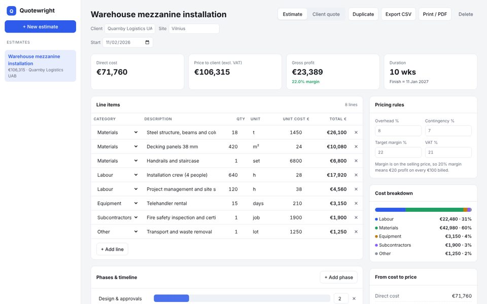

Quotewright — cost estimator & quote generator
A web app that turns line-item costs into a correctly priced, client-ready quote. Overhead, contingency and margin rules are applied the same way every time, low-margin quotes are flagged before they go out, and the client quote prints to PDF in one click.